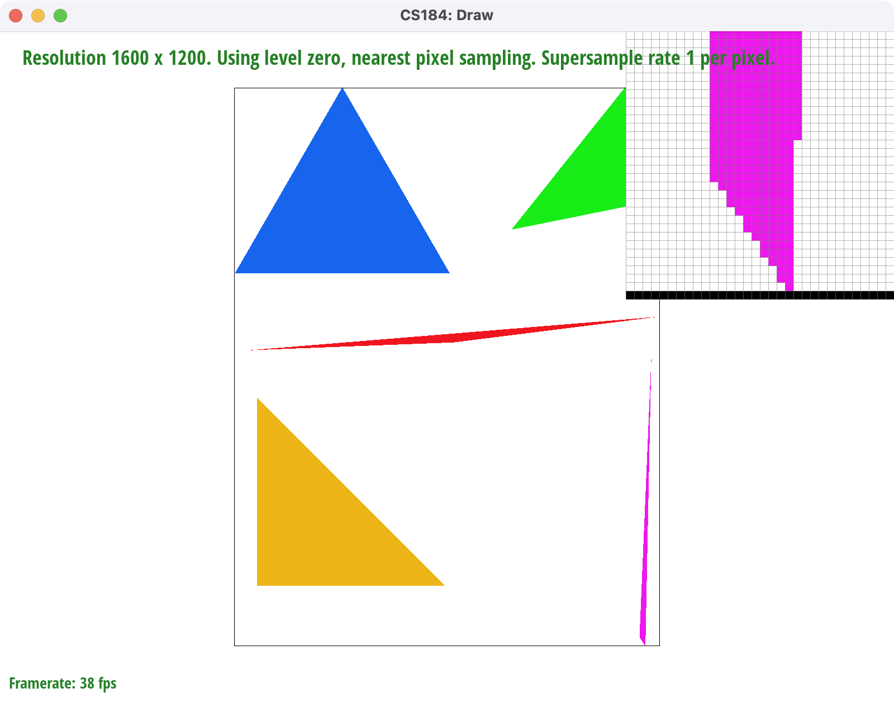
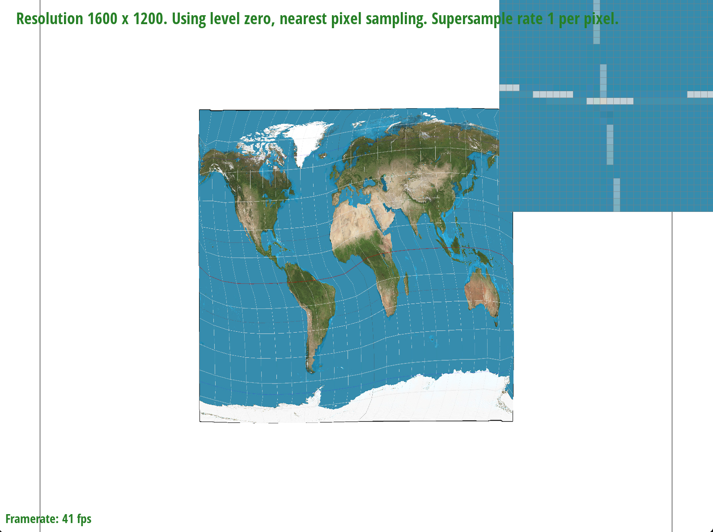
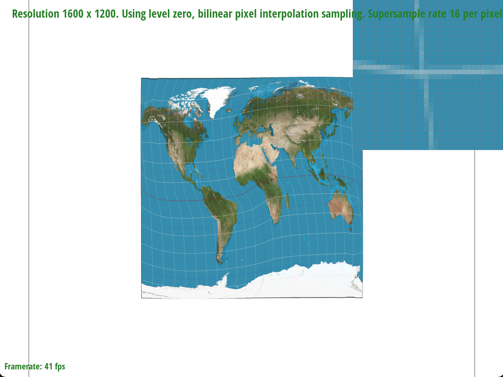
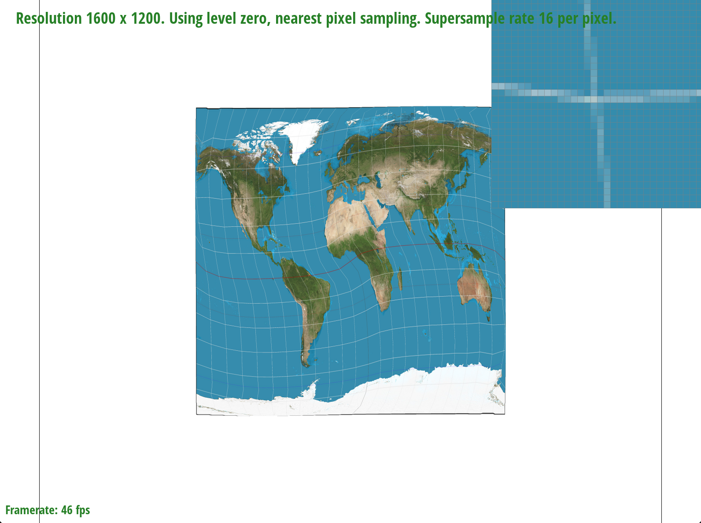
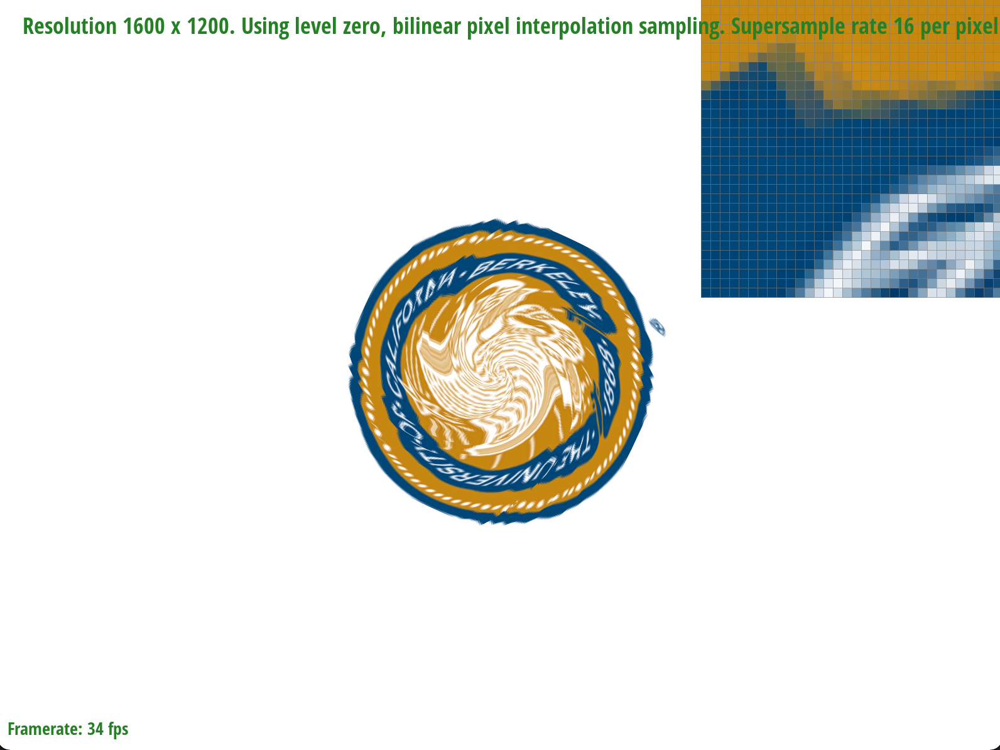
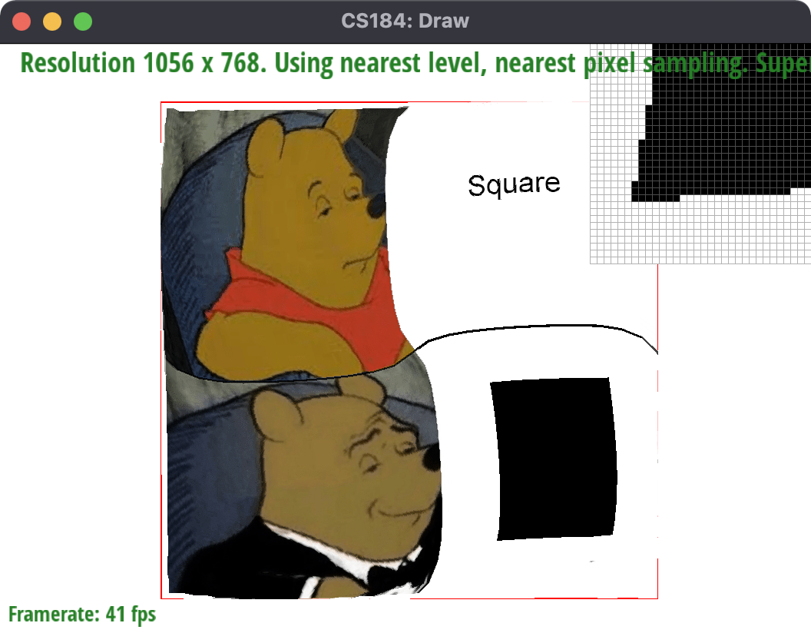

Overview
Give a high-level overview of what you implemented in this project. Think about what you've built as a whole. Share your thoughts on what interesting things you've learned from completing the project.
In this project, we created a vector graphics renderer capable of produces images using simplified SVG (Scalable Vector Graphics) files. Using concepts and techniques discussed in class, we produced a series of rasterizer functions with differing implementations, such as basic triangle rasterization and rasterization using barycentric coordinates, capable of antialiasing using supersampling. Additionally, we implemented basic texture mapping that samples textures using Nearest Pixel Sampling, Bilinear Interpolation, and Trilinear Interpolation. By implementing these techniques, we discovered the relationship between antialiasing and pixel sampling on a deeper level, as we could explore the relationship between different sampling techniques with respect to different types of supersampling rates.
Section I: Rasterization
Part 1: Rasterizing single-color triangles
As a high level overview, we can rasterize the triangle by sampling each point in the screen space and using the three line test to check if that point is located within the bounds of the triangle. If the point lies within the triangle bounds, the pixel is colored.
We implemented the three line test as a helper function that checks whether a given point lies within the three half planes created by a combination of the three triangle vertices. If the point is either all positive values or all negative values, (depending on a clockwise or counterclockwise notation) then the point lies within the bounds of the triangle.
In our implementation, we search a bounding box of pixels between the smallest and largest x and y coordinates of all vertices of the triangle. This is significantly better than iterating through the entire frame buffer, and greatly optimizes runtime. Then for each pixel, we used our three line test helper function to determine if that pixel lay within the bounds of the triangle. If the pixel lies within bounds, we color the sample buffer the given color.
This algorithm is no worse than one that checks each sample within the bounding box of the triangle, because the three line helper function runs in O(1) time, as it simply uses basic arithmetic operations such as dot product (with 2D vectors) and subtraction.
Part 2: Antialiasing triangles
In order to super-sample, we scaled the sample buffer up by sqrt(sample rate). A point in the framebuffer (x,y) maps to the sample buffer points in the r x r rectangle with top-left corner (x*r, y*r), where r = sqrt(sample rate).
For drawing a point at (x,y) (fill_pixel), we fill that r x r rectangle with top-left corner (x, y) with the given color.
For drawing triangles, we scale the x0, y0, x1, ... coordinates by amount by which the sample buffer is scaled up. That way these coordinates map to the sample space. Compared to the previous triangle code, the only difference is that rather than compute the in-triangle test on the framebuffer-space points, we compute the tests with the sample-space points.
To finally fill the framebuffer, we average the colors in each r x r rectangle in the sample buffer. This average color is used for the corresponding point in the framebuffer.
|

|

|

|
At rate 1, every pixel in the zoomed-in region is either full pink or white, as the frame buffer and sample buffer are the same size.
At rate 4, every pixel has 5 possible colors: white (0 pixels in triangle), slightly pink (1 pixel in triangle), somewhat pink (2 pixels in triangle), quite pink (3 pixels in triangle), and full pink (4 pixels in triangle). This allows for the edges to be softer.
At rate 16, every pixel has 17 possible colors, which allows for even softer edges especially at the edges that are very slightly rotated. The bottom most edge of the triangle looks similar since the softness is bounded by the sampling rate of the frame buffer, and 4 points is enough to soften this edge.
Part 3: Transforms
Our robot is in whipping stance. That is, whip stance originates from Silento's 2015 one-hit-wonder: "Watch Me (Whip/Nae Nae)." This dance move was extremely popular in 2015, a time where many of us in this class were in middle and high school. Here, Robot is positioned in horse stance, one hand on their thigh and the other in the air, preparing to whip.
Section II: Sampling
Part 4: Barycentric coordinates
Barycentric coordinates parameterize the interior of the triangle by writing an (x,y) coordinate, which is in terms of the screen space, into a (⍺, β, γ) coordinate that is in terms of distances to the triangle's vertices.

Above is a triangle whose interior colors have been interpolated with barycentric coordinates. The yellow, cyan, and magenta colors correspond to barycentric coordinates (1, 0, 0), (0, 1, 0), and (0, 0, 1), which define the corners of the triangle. As one moves farther from the triangle corner, the other colors start to blend in as the original corner's color is reduced. The center, which is equidistant from all corners, has barycentric coordinates (1/3, 1/3, 1/3) and is colored grey, an equal mix of all 3 colors.

test7.svg.
Part 5: "Pixel sampling" for texture mapping
Pixel sampling is used in order to approximate the value of a function, or in our case, a color, for a point in screen space
by using neighboring pixels to estimate the value or color of the specified point.
For our project, we implemented pixel sampling in our (rasterize_texture_triangle) function using barycentric coordinates and (SampleParams).
There are two pixel sample methods we implemented for this project: nearest sampling and bilinear interpolation.
1.) Nearest sample: This type of pixel sampling takes the color of the nearest pixel to the given pixel and uses that color to approximate the color of the given pixel. The nearest sampling method only uses the closest pixel, and does not consider the values of any neighboring points. This yields a piecewise-constant function. As the values are not averaged in any way. This can create some issues if there is high frequency between two pixels.
For our nearest sample function, we are rounding our given point to the closest pixel and sampling the color found at that pixel. This color will be used for our given point.
2.) Bilinear interpolation: this type of sampling is quite different compared to nearest sample. Here, we snap our given point to the closest pixel, and uses the 4 neighboring pixels
to approximate the given point’s “average” color. This "averaging" is calculated with the helper (lerp) function, which takes the average of two point's values weighted by their distance
from the given point. Since we have 4 nearest points to the given pixel, we can (lerp) between the horizontal and vertical points in order to find the average color value of the given point.
In our implementation, after finding the 4 nearest pixels and their respective color values, we apply our (lerp) function on the color values to produce an average color for the
point we are trying to approximate. By weighting each of the 4 colors by their respective distances from the desired point, we avoid the problem of a piecewise or disjoint
jump in color if the texture we are sampling from is of high frequency. This produces a smoother look to our image without jaggies or moire.
We can visually see difference between Nearest Pixel Sampling and Bilinear Interpolation in the images below. The top two are produced with a supersample rate of 1, while bottom two are produced with a supersample rate of 16.
|
|

|
|

|

|
|

|

|
The difference is less apparent when supersampling at a high rate. Because we are supersampling at 16 per pixel, the differences between bilinear and nearest pixel sampling are negligible. We see that nearest pixel sampling produces images that are slighly more crisp compared to bilinear interpolation, whose images are slighly more blurred along edges. Thus, when the supersample rate is higher, bilinear and nearest pixel sampling are farily comparable in image quality.
Part 6: "Level sampling" with mipmaps for texture mapping
Level sampling finds the best texture resolution for a triangle by calculating at what rate the uv coordinates advance in that region then using the mipmap corresponding to that resolution level.
To find this rate, we take the derivatives of texture coordinates respective to x and y. If f(x) gives the texture coordinates at position x, we estimate ∂/∂x f(x,y) by taking f(x+1,y)-f(x,y)/1. Here texture coordinates are the uv coordinates multiplied by the texture resolution.
Once we have the norms of ∂/∂x f(x) and ∂/∂y f(y), we take the maximum to get the maximum rate of change of texture coordinates. The mipmap level is the log2 of this rate of change.
Once we have the level, it is important to check that it is valid (at least zero, less than the max mipmap level), otherwise we get a segfault! Nearest-neighbor level sampling rounds the logarithm and uses the result as the sample. Trilinear sampling calculates the color at the logarithm rounded up and rounded down then interpolates between the two colors depending on which the log is closest to.
| Speed | Memory usage | Antialiasing Power | |
|---|---|---|---|
| Pixel Sampling | Switching form nearest-neighbor to bilinear filtering will sample 4 locations for every pixel and interpolate them, causing the sampling code to become slower (about 4x slower). | There is only slight increase in memory usage due to storing some extra colors per loop iteration. | Smallest antialiasing power: uses the information from adjacent pixels to reduce aliasing in textures but cannot eliminate all the high frequencies. |
| Level Sampling | There is a performance penality from needing to compute derivatives and calculate the level at every pixel. However, the mipmaps that are read will be smaller, which may speed up the program due to better caching performance. | Our program loads all the mipmaps levels at once, so memory usage is not lower. However, we could in theory decrease memory usage by only loading the mipmaps levels we need. | Medium antialiasing power: the reduced-size mipmaps can take advantage of more computationally expensive filtering algorithms, but only aliasing on textures are eliminated. |
| # Samples per Pixel | There is a large decrease in performance because if the number of samples per pixel doubles, double the number of pixels need need to be rendered, which exercises all rendering code paths (triangle equations, samping, interpolation, etc) twice. | Memory usage scales with the number of samples per pixel, which will double memory used if you are doubling the number of samples per pixel. | Biggest antialiasing power: because it can antialias not only textures but also normal shapes. However, achieving this level of antialiasing requires increasing the # of samples per pixel by 4x or 9x or even 16x. |

|
|
|

|

|
Section III: Art Competition
If you are not participating in the optional art competition, don't worry about this section!